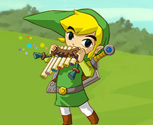
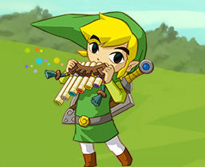

mostly due to the efforts of the wonderful composer Koji Kondo. Music not only is a key factor in the games, taking us across the sea, through dungeons, setting the tone and mood throughout, it also factors heavily into many of the series gameplay elements as well. In "Ocarina of Time" Link learns a variety of melodies on his fabled ocarina given to him by princess Zelda hereself. These melodies drastically effect gameplay, allowing Link to travel to the past, cause rainstorms, and unlock secret treasures and dialogue. Nearly every game in the series has a fabled instrument like the Ocarina tying the music of The Legend of Zelda not only to our ears, but to how we play with and experience the game. Click here to skip the images and go to samples of the music!
 
